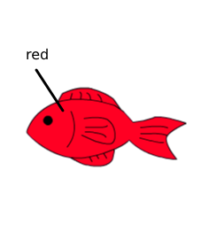

SWF の MovieClip の置き換え¶
Tomato では SWF 内の MovieClip の置き換えを 行うことができます。
tomato/sample/mc/tank.swf 内の MovieClip を置き換えてみましょう。 tank.swf は３つの MovieClip のインスタンス名 kombu , fish1 , fish2 が付けられています。
fish1 , fish2 はダミーとして赤色と緑色の長方形が 設定されています。

Swf, MovieClip オブジェクトの生成¶
まずは Tomato で tank.swf を読み込んでみましょう。
>>> from tomato import Swf
>>> tank_swf = Swf(open('tomato/sample/mc/tank.swf').read())
>>> tank_swf
<tomato.swf_processor.Swf object at 0x1b19f0>
Swf オブジェクトが生成されたことが分かります。
get_movie_clip_name 関数を用いることで、Swf 内で用いられている MovieClip の名前を取得することができます。
>>> tank_swf.get_movie_clip_name()
['kombu', 'fish1', 'fish2']
get_movie_clip 関数を用いることで、Swf 内の MovieClip オブジェクトを取得することができます。
>>> tank_swf.get_movie_clip('fish1')
<tomato.structure.MovieClip object at 0x498270>
replace_movie_clip 関数¶
Tomato では Swf オブジェクト及び MovieClip オブジェクトを 用いて MovieClip の置き換えを行うことができます。
tank.swf の MovieClip である fish1 を tomato/sample/mc/fish_red.swf 内の MovieClip である red に 置き換えてみましょう。
まずは、 fish_red.swf を読み込み、Swf オブジェクト及び MovieClip オブジェクト を生成します。
>>> red_swf = Swf(open('tomato/sample/mc/fish_red.swf').read())
>>> red_swf
<tomato.swf_processor.Swf object at 0x49a570>
>>> red_swf.get_movie_clip_name()
['red']
>>> mc_red = red_swf.get_movie_clip('red')
>>> mc_red
<tomato.structure.MovieClip object at 0x498250>
replace_movie_clip 関数を用いて tank.swf の MovieClip を mc_red に置き換え、``write`` 関数を用いて出力します。
>>> tank_swf.replace_movie_clip('fish1', mc_red)
<tomato.structure.MovieClip object at 0x498630>
>>> tank_swf.write(open('tomato/sample/mc/out.swf', 'w'))
出力された tomato/sample/mc/out.swf は次のようになります。
fish2 も tomato/sample/mc/fish_white.swf (MovieClip名: white) で 置き換えると、次のような出力結果になります。
>>> white_swf = Swf(open('tomato/sample/mc/fish_white.swf').read())
>>> mc_white = white_swf.get_movie_clip('white')
>>> tank_swf.replace_movie_clip('fish2', mc_white)
<tomato.structure.MovieClip object at 0x498670>
>>> tank_swf.write(open('tomato/sample/mc/out2.swf', 'w'))
置き換えの際の注意¶
- ビットマップ画像が含まれる MovieClip の置き換え
- Tomato ではビットマップ画像が含まれる MovieClip の置き換えを 行うことは出来ません。
- MovieClip の入れ子数の限界
Flash Lite 1.1 では、MovieClip の入れ子数に限界があり、 置き換えを行う際は入れ子数の限界を超えないように注意しなければなりません。 MovieClip の入れ子数問題に関しては、こちらの記事が非常に参考になります。
FlashLite1.1: スタック限界エラーにご注意！ | エントリー | _level0.KAYAC